Page Tunes
Get Lit-rary with PageTunes and explore books through music! A semester-long UX & product design case study I completed at Columbia University
Product Strategy, Product Design
User Research, Usability Testing
AI Powered Immersion
User Research, Usability Testing
AI Powered Immersion
1. Problem:
What did I set out to
solve?
# Book lovers who crave more exploration beyond Goodreads, Insta, and Booktok can feel limited in their options to delve deeper into the worlds, characters, and themes of their favorite books, and it's a real bummer!
# Introducing PageTunes! It's a revolutionary platform that blends books and music in a whole new way. With AI-powered playlist creation and a vibrant community, readers can dive into personalized playlists, taking their reading experience to the next level!
Read More
# Book lovers who crave more exploration beyond Goodreads, Insta, and Booktok can feel limited in their options to delve deeper into the worlds, characters, and themes of their favorite books, and it's a real bummer!
# Introducing PageTunes! It's a revolutionary platform that blends books and music in a whole new way. With AI-powered playlist creation and a vibrant community, readers can dive into personalized playlists, taking their reading experience to the next level!
Read More
2. User Reserach:
What methods did I use to
research
customers?
# I incorporated user research into my case study by employing various methods such as surveys, interviews, and user testing to collect valuable data on user preferences and behaviors
# Additionally, I utilized tools like persona development and journey mapping to analyze and interpret the gathered data, enabling a deeper understanding of user needs and pain points. 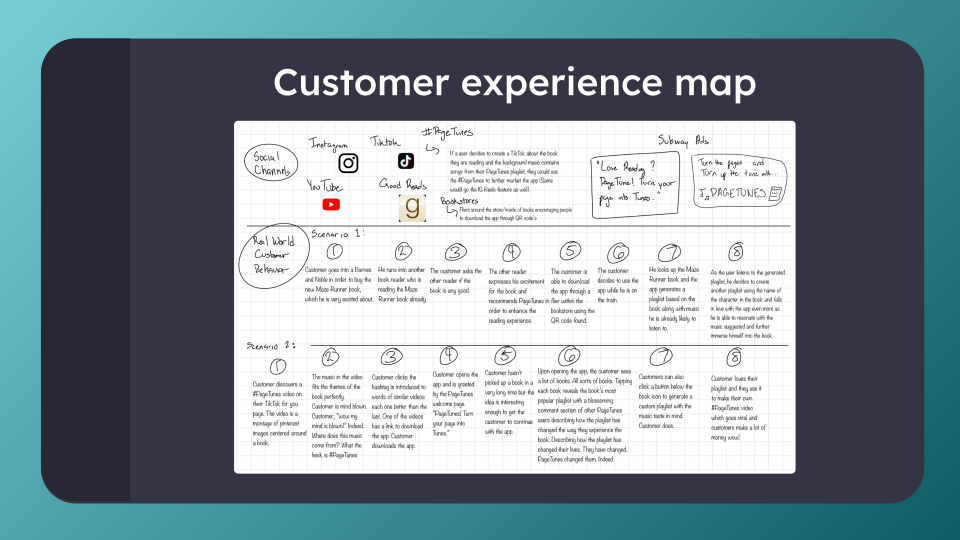
# I incorporated user research into my case study by employing various methods such as surveys, interviews, and user testing to collect valuable data on user preferences and behaviors
# Additionally, I utilized tools like persona development and journey mapping to analyze and interpret the gathered data, enabling a deeper understanding of user needs and pain points. 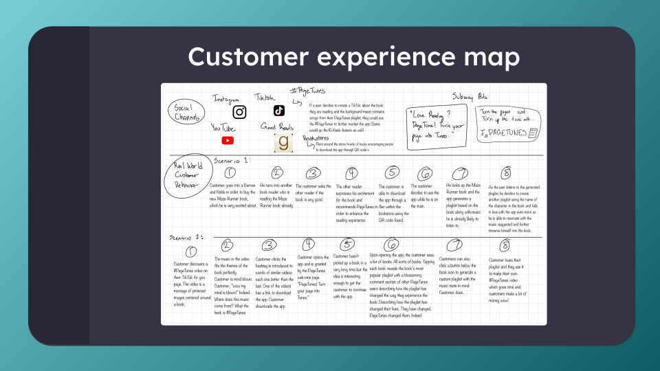
3. Ideating, wireframes,
&
prototyping:
# Prioritizing the creation of a Minimum Viable Product (MVP) for this experimental app, I generated ideas, crafted wireframes, and developed prototypes using sketching and Figma
# A significant challenge arose in ensuring a seamless user interface, which I addressed through the application of design thinking principles to better understand and meet customer needs
# Prioritizing the creation of a Minimum Viable Product (MVP) for this experimental app, I generated ideas, crafted wireframes, and developed prototypes using sketching and Figma
# A significant challenge arose in ensuring a seamless user interface, which I addressed through the application of design thinking principles to better understand and meet customer needs
4. MVP
Functionality
# Used a minimalist color palette with blues and greens, and used clean sans-serif fonts for headings and legible serif fonts for body text, I created a visually appealing interface
# The homepage utilizes bold typography and a hero image to showcase the app's main features, with clear call-to-action buttons guiding user interaction.
# The features tile used descriptive icons and concise text to ensure a cohesive user experience. 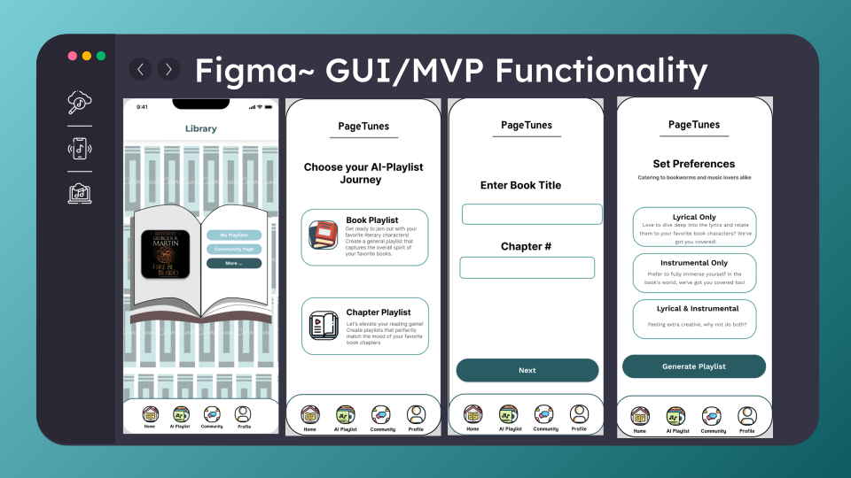 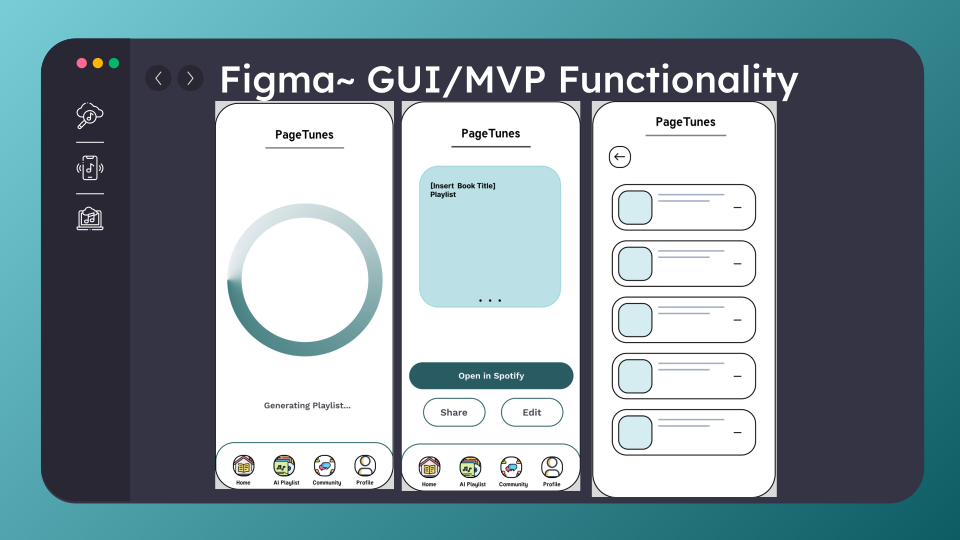 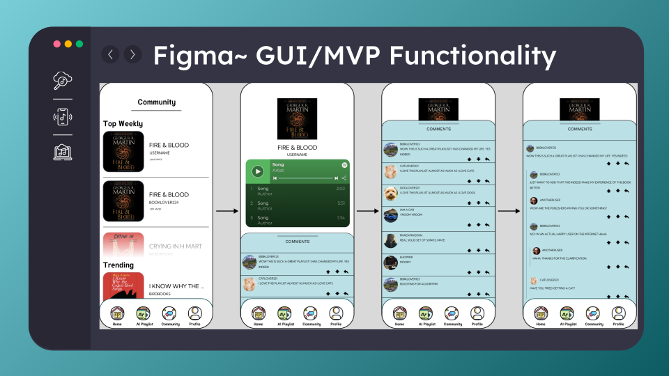 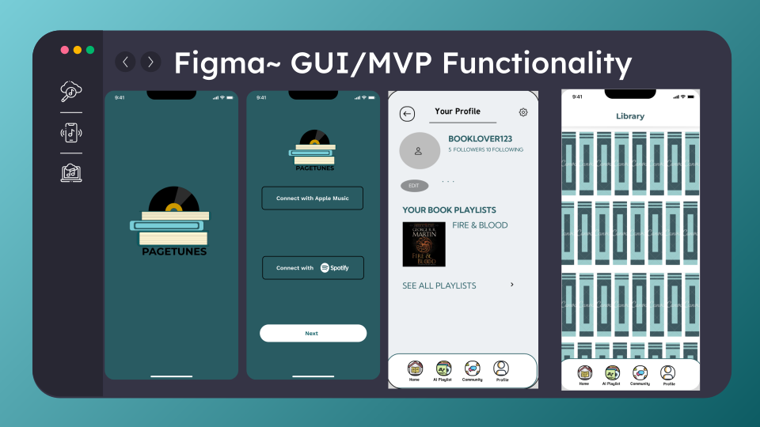
# Used a minimalist color palette with blues and greens, and used clean sans-serif fonts for headings and legible serif fonts for body text, I created a visually appealing interface
# The homepage utilizes bold typography and a hero image to showcase the app's main features, with clear call-to-action buttons guiding user interaction.
# The features tile used descriptive icons and concise text to ensure a cohesive user experience. 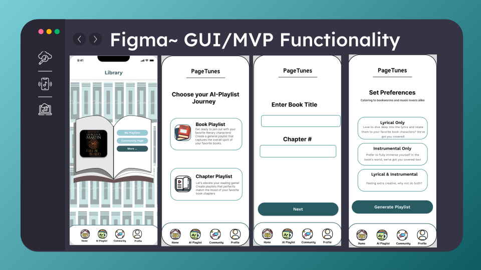 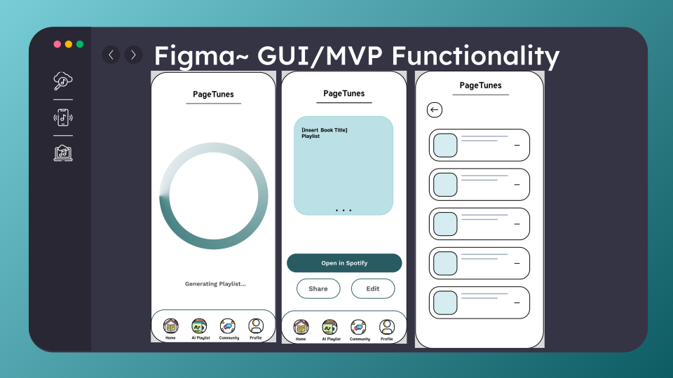 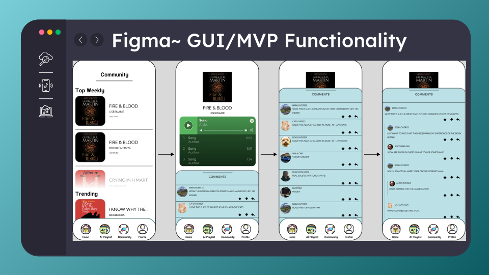 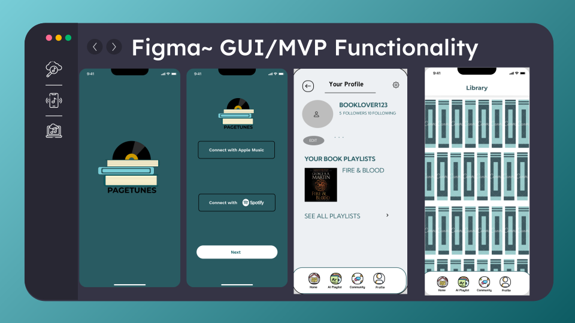
5. How did I have an
impact?
# Close collaboration with the product team to shape the roadmap effectively
# Utilizing storytelling and design thinking techniques to simplify app education
# Conducting in-depth research and market analysis to address complexities in app feature scenarios.
# Gained proficiency in product strategy, market research, and UI/UX design 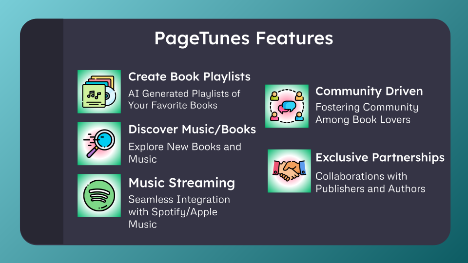
# Close collaboration with the product team to shape the roadmap effectively
# Utilizing storytelling and design thinking techniques to simplify app education
# Conducting in-depth research and market analysis to address complexities in app feature scenarios.
# Gained proficiency in product strategy, market research, and UI/UX design 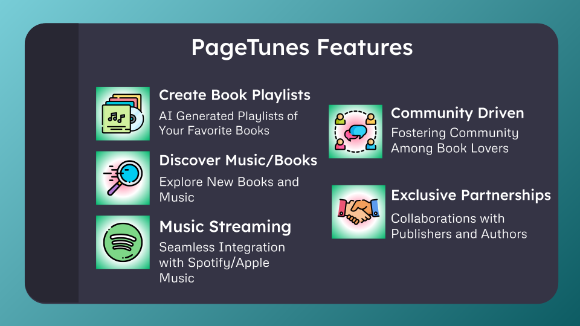